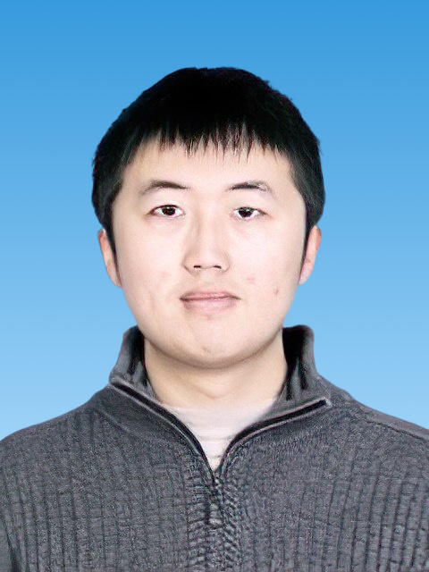

|  | Chuan Kuang (匡川) |
[1]Shuxian Hong,Chuan Kuang,Jianchao Zhang, Dongshuai Hou, Jinrui Zhang, Laibao Liu, Biqin Dong, “Visual analysis for microscopic cracking propagation of rubberized concrete,” Construction and Building Materials, 265(2020):20599.(Q1, IF=6.142) [Link] [PDF]
[2] Shuxian Hong,Chuan Kuang, Jianchao Zhang, Biqin Dong, “A segmentation method for enhancing the continuity and integrality of micro-cracks in concrete fracture XCT image,” Journal of Materials in Civil Engineering, (Accept, Q2, IF=3.266) [Link] [PDF]
[3]Jianchao Zhang,Chuan Kuang, Chen Lin, Zheming Liu, Ke Wang, Shuxian Hong, Biqin Dong, Dongshuai Hou, Laibao Liu, Feng Xing, “Evolutionary trace for ductile fracture performance of rubber-cement composites,” Cement and Concrete Composites, 121(2021): 104080.(Q1, IF=7.586) [Link] [PDF]
[4]Shuxian Hong, Peng Liu, Jianchao Zhang, Chuan Kuang, Biqin Dong, Qiling Luo, Wei Liu, “Interior fracture analysis of rubber-cement composites based on X-ray computed tomography and digital volume correlation,” Construction and Building Materials, 259(2020): 119833.(Q1, IF=6.142) [Link] [PDF]